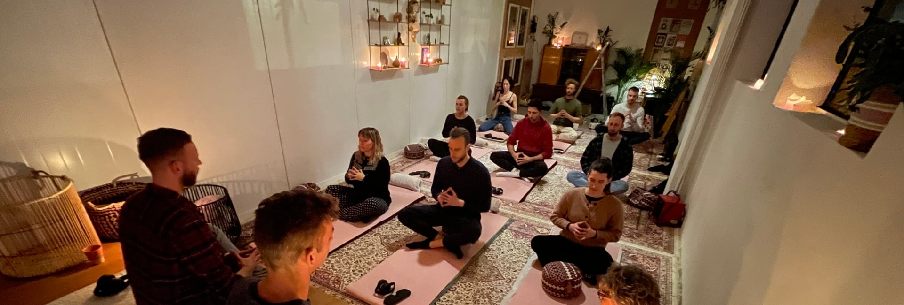
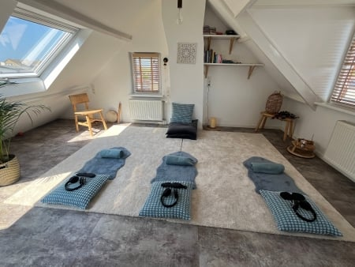
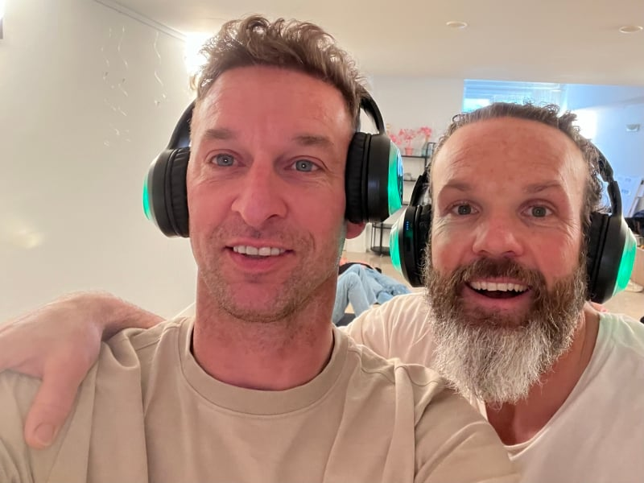
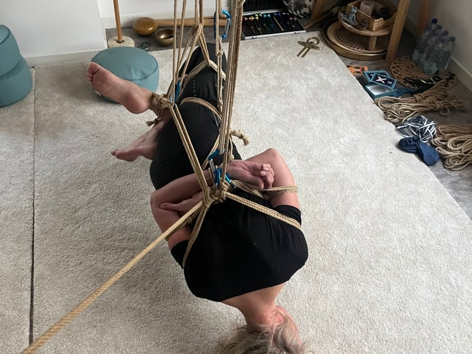
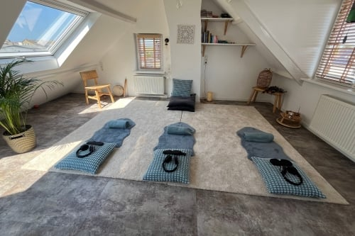
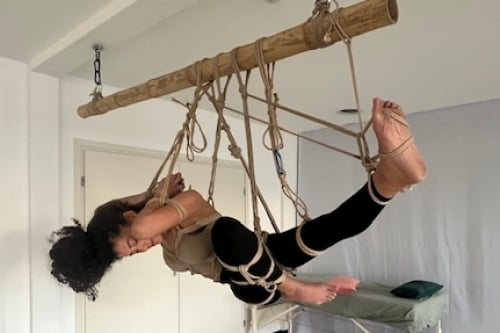

Body, mind & soul upgraden?
Connect met je onderbewustzijn en laat spanning in het lijf en gedachten in het hoofd verdwijnen.
De weg naar balans en innerlijke vrede
Ervaar de transformerende invloed van ademwerk, gecombineerd met bodywork dat je nergens anders vindt. Deze sessie is voor iedereen die vooruit wil: we gaan loslaten op diepere lagen in het lichaam en in de mind.
We informeren je over verschillende manieren van ademhalen en het activeren van je levensenergie (kundalini). Daarnaast openen en masseren we je lichaam en maken we het vrij van blokkades, vastzittende emoties en stress. Gun jezelf en je dierbaren deze helende beleving — klaar voor een volgend level?
Privé sessie
Kom alleen of met maximaal 3 personen. 7 dagen per week beschikbaar.
Sessie delen
Gaat door vanaf 3 aanmeldingen. Via WhatsApp hoor je de dagen en tijden.


Wat zijn nou die 9 D's?
Naast het ademwerk ontvang je via een koptelefoon een geluidservaring in combinatie met hypnotherapie en begeleiding die je nooit eerder beleefd hebt. Deze zorgvuldig samengestelde mix werkt op meerdere niveaus.
Multidimensionaal geluid
Geluid doorkruist beide kanalen en creëert een meeslepende ruimte. Het transporteert je naar een grotere innerlijke wereld, waardoor je je fysieke omgeving vergeet.
Binaural beats
Gemixte frequenties bevorderen harmonie tussen de twee hersenhelften — zorgvuldig ontworpen om de 9D-ervaring zo krachtig mogelijk te ondersteunen.
Solfeggio frequenties
Frequenties die de energiesystemen van het lichaam harmoniseren. Elke frequentie komt overeen met een specifieke intentie voor het activeren van het lichaam.
Isochrone tonen
Eén frequentie die snel pulseert en de hersenen op specifieke manieren beïnvloedt om de algehele ervaring te verbeteren.
Harmonische aanpassing
Muziek afgestemd op 432 Hz — diep harmonieus met het menselijk lichaam en vaak de "helende frequentie" genoemd.
Somatische ademhaling
De fundamentele techniek: opgebouwde trauma's en vastgehouden emoties loslaten, genezing bevorderen en je innerlijke kracht voelen.
Hypnotische therapie
Geworteld in de kernprincipes van hypnose: emoties oproepen en suggesties aanreiken in een zeer ontvankelijke staat.
Geleide vocal coaching
Het equivalent van een waardevolle therapiesessie: coaching, reframing en het uitdagen van beperkende overtuigingen en zelfsabotage.
Bio-akoestisch geluid
"Levensgeluiden": lage frequenties die specifieke biologische en emotionele reacties triggeren, met diepgaande therapeutische effecten.
Wat kan je verwachten?
Warm welkom
Bij binnenkomst een warm welkom met een verfrissende kop thee of water.
Kennismaking & uitleg
Leer ons kennen en ontvang uitleg over ademwerk en wat je kunt verwachten.
De ademsessie
Duik in de begeleide ademsessie en geniet van een transformerende ervaring.
Nazorg & delen
Rustig de tijd om te ontspannen, vragen te stellen, te delen en te genieten van thee, water en een gezonde snack.

"Als ademcoach heb ik al veel ademsessies mogen ervaren, maar dit was toch echt weer anders! De fases waar ik doorheen ging waren mega bijzonder — en dat kwam echt door de diepe begeleiding met koptelefoon."
Ons aanbod

Privé ademsessie
Ontdek de kracht van persoonlijke aandacht: 9D-audio afgestemd op jouw behoeften, gecombineerd met lichaamswerk en healing. Reserveer nu en creëer nieuwe, verse levensenergie!
ContactVoor bedrijven
Versterk teamgeest en welzijn met bedrijfssessies, afgestemd op de dynamiek van jouw team. Verbeter focus, verminder stress en versterk de onderlinge band.
Contact ons
Retraite op maat
Even helemaal eruit. Een week lang 1-op-1 begeleiding in Egmond aan Zee: de vakantie die je leven verandert.
Ontdek meerVeelgestelde vragen
Voor wie is ademwerk?
Een ademsessie werkt helend op diverse niveaus. Het geeft je de kans om negatieve overtuigingen los te laten, zelfoordelen te verminderen en vastzittende emoties en blokkades vrij te laten. Voel je het verlangen om in je kracht te staan en innerlijke vrijheid te ervaren, dan is ademwerk iets voor jou.
In welke gevallen raden jullie een sessie af?
Helaas zijn er enkele gevallen waarin deelname aan dit soort transformationeel ademwerk niet mogelijk is:
- Als je momenteel zware medicatie gebruikt
- Bij cardiovasculaire problemen of een hoge hartslag of bloeddruk (boven 140/90)
- Bij een voorgeschiedenis van epilepsie
- Na een recente operatie
- Bij netvliesloslating
- Bij schizofrenie, een andere extreme stoornis of psychose
- Bij een bipolaire depressie
Dit is om de veiligheid en het welzijn van alle deelnemers te waarborgen.
Ik heb geen grote trauma's meegemaakt — is het ook voor mij?
Je hoeft geen grote, heftige dingen meegemaakt te hebben om te ervaren dat er dingen zijn die je tegenhouden. Van kinds af aan leren wij gedragingen en gedachtepatronen aan die ons vormen — veelal om ons te beschermen in de situatie van toen. Ervaar je dat aangeleerde overtuigingen je nu niet meer dienen? Doe je soms dingen die niet in lijn zijn met wat je werkelijk vindt? Ervaar je spanning of pijntjes in je lichaam? Dan zou het heel goed kunnen dat je baat hebt bij ademsessies. Vragen over jouw situatie? Kom in contact!
Wat is het voordeel van regelmatig een sessie doen?
Al bij een eenmalige sessie heb je meestal veel baat. Daarnaast heb je er — net als bij sport, yoga en meditatie — veel profijt van om het regelmatig te doen. Onbewust slaan we veel op in ons lichaam; het opschonen daarvan gaat het beste bij meerdere sessies. Consistent ademsessies blijven doen heeft grote voordelen voor je algehele gezondheid.
Kies voor jezelf en ervaar de kracht van 9D-ademwerk
Aanmelden of eerst een vraag stellen? Stuur ons een appje — we reageren snel en denken graag met je mee.